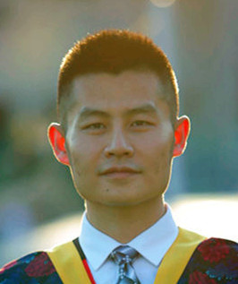

I'm a lecturer in Department of Electronic Engineering, Tsinghua University.
My current research is broadly in multimodal learning, computer vision, deep learning, and machine learning.
Before joining Tsinghua, I was a postdoc research assistant in Department of Engineering Science, University of Oxford, supervised by Prof. David A. Clifton. Previously, I was a postdoctoral research fellow in School of Computer Science and Engineering, Nanyang Technological University (NTU), supervised by Prof. Xavier Bresson.
In 2019, I received my Ph.D. degree from Pattern Recognition and Intelligent System Laboratory (PRIS) in Beijing University of Posts and Telecommunications (BUPT), supervised by Prof. Jun Guo.
[Apr., 2023] "Multimodal learning with transformers: A survey" is accepted by IEEE TPAMI. [paper]
[Nov., 2022] We are organizing a special issue for IEEE TPAMI. "Large-Scale Multimodal Learning: Universality, Robustness, Efficiency, and Beyond" Website
[June, 2022] a preprint paper "Multimodal Learning with Transformers: A Survey" [paper]
[Mar., 2022] We are organizing "The 1st Workshop on Healthcare AI and COVID-19" @ICML 2022. Website: https://healthcare-ai-covid19.github.io/
[Feb., 2022] a preprint paper "How to Understand Masked Autoencoders" [paper]
[Feb., 2022] a preprint paper on unsupervised clothes change person Re-ID
[Jan., 2022] "Deep Learning for Free-Hand Sketch: A Survey" is accepted by IEEE TPAMI. [paper], [code]
[Dec., 2021] We are organizing "The 2nd Workshop on Sketch-Oriented Deep Learning (SketchDL)" @CVPR 2022.
Website: https://sketchdl.github.io/
[Jun., 2021] New paper! New dataset! "DeepChange: A Long-term Person Re-identification Benchmark" [paper], [download]
[Mar., 2021] Our paper "Multi-Graph Transformer for Free-Hand Sketch Recognition" is accepted by IEEE TNNLS. [paper], [code]
[Dec., 2020] We are organizing "The 1st Workshop on Sketch-Oriented Deep Learning (SketchDL)" @CVPR 2021.
Website: https://sketchdl.github.io/
[Nov., 2020] Our paper "On Learning Semantic Representations for Large-Scale Abstract Sketches" is accepted by IEEE TCSVT. [link]
[August, 2020] Our paper "Fine-Grained Instance-Level Sketch-Based Video Retrieval" is accepted by IEEE TCSVT. [link]
[June, 2020] Our paper "Deep Self-Supervised Representation Learning for Free-Hand Sketch" is accepted by IEEE TCSVT. [link]
[May, 2020] Was invited as an area chair for multi-media track on IEEE TENCON 2020
[March, 2020] Released TorchSketch, the first sketch-oriented open-source deep learning library. [code]
[Jan 8, 2020] Released my paper "Deep Learning for Free-Hand Sketch: A Survey" on arXiv. [paper], [code]
[Dec 24, 2019] Released our paper "Multi-Graph Transformer for Free-Hand Sketch Recognition" on arXiv. [paper], [code]
[May 31, 2019] Ranked in 8th place in EPIC-Kitchens Action Recognition Challenges @CVPR2019.
[May 29, 2019] Passed thesis defense with an average score of 92.4/100.
[May 14, 2019] Released an unofficial PyToch implementation for MobileNetV3 with pretrained model on ImageNet. [code]. See [link] for media coverage.
[04/2019] Released an unofficial PyToch implementation for SiamRPN++ tracker (CVPR2019). [code]. See [link], [link], [link], [link] for media coverage.
[04/2018] Passed Juniper JNCIA-Junos exam, in London!
[02/2018] One paper has been accepted as poster by CVPR 2018 !
Address: Tsinghua University, Haidian District, Beijing, 100084
Email: peng_xu [AT] tsinghua.edu.cn peng.xu [AT] aliyun.com peng dot xu [aT] eng.ox.ac.uk peng.xu [AT] ntu.edu.sg peng.xu [AT] bupt.edu.cn
XU Peng, ZHU Xiatian, and CLIFTON David, "Multimodal Learning with Transformers: A Survey", IEEE Transactions on Pattern Analysis and Machine Intelligence (TPAMI), 2023. [paper]
CAO Shuhao, XU Peng★, and CLIFTON David, "How to Understand Masked Autoencoders", arXiv:2202.03670, 2022. [paper] (★ corresponding author)
XU Peng★, and ZHU Xiatian, "DeepChange: A Long-term Person Re-identification Benchmark", arXiv:2105.14685, 2021. [paper] [dataset]
XU Peng★, et al., "Deep Learning for Free-Hand Sketch: A Survey", IEEE Transactions on Pattern Analysis and Machine Intelligence (TPAMI), accepted. [paper] [code]
XU Peng★, Chaitanya K. Joshi, and Xavier Bresson, “Multi-Graph Transformer for Free-Hand Sketch Recognition”, IEEE Transactions on Neural Networks and Learning Systems (TNNLS), 2021. [paper] [code]
XU Peng, et al., “Sketch-Mate: Deep Hashing for Million-Scale Human Sketch Retrieval”, in CVPR, 2018. [paper]
Review for TPAMI, TNNLS, TCSVT, TAFFC, CVIU, ICML, NeurIPS, CVPR, ICCV, ECCV, AAAI, ACCV, WACV, ICME, etc.
Junos (JNCIA-Junos) (April 2018)
TCP/IP Protocols Cisco-CCNA (August 2010)
Linux Redhat-RHCE (February 2011)